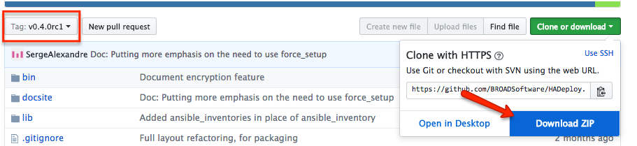

Installation
Version
The latest stable version of HADeploy is 0.6.1.
Prerequisite
HADeploy can be installed on a Linux system, or on a MAC OS X workstation
Installation on Windows is not supported, but VirtualBox and Vagrant would be your best friends in this case.
Ansible
HADeploy internally use Ansible. If it is not already installed, you can install it independently, or let HADeploy install it automatically.
NB: HADeploy require at least Ansible version 2.3.0
Virtual environnement
HADeploy (And Ansible) can be installed inside Python virtual Environnemnt.
Installing inside virtual environment has several advantages:
-
Installation does not require root access.
-
You can have several isolated version installed on the same system.
-
Your installation will not interfere with others users.
One drawback is you will need to activate your virtual environment on each login. But you can automate this in your ~/.profile.
Of course, if you want to share a single installation of HADeploy amongst all users of your system, you must install it globally.
Latest release via pip (Linux)
Current installation process has been tested on RHEL/CentOS7 (Python 2.7). Installation on other Linux Variant may works. All feedbacks are welcome.
pip is the Python package manager. If not already installed, you can easely install it. For example, on RHEL/CentOS7:
sudo yum install -y python-pip
If Ansible is not already installed, you must ensure several required package are present. For example, on RHEL/CentOS7:
sudo yum install -y python-devel openssl-devel gcc
We strongly adivise you to ensure you have the latest pip version:
sudo pip install --upgrade pip
Then, you can install HADeploy:
sudo pip install HADeploy
Or simply
pip install HADeploy
If you are in a virtual environment
If you encounter any trouble during these last steps, again, be sure you have the latest pip version, as stated above.
You are now ready to used HADeploy from this workstation.
Latest release via pip (Mac OS X)
pip is the Python package manager. If not already installed, you can easily install it.
sudo easy_install pip
Then, you can install HADeploy:
sudo pip install HADeploy
Or simply
pip install HADeploy
If you are in a virtual environment
You are now ready to used HADeploy from this workstation.
Do NOT use
easy_installto install HADeploy directly.
Install from source GIT repository.
HADeploy is easy to install directly from source. If you want to have the very latest versions, or a specific one, or intend to contribute, this is the method of choice.
For Linux only, install several required package:
sudo yum install -y git python-pip python-devel openssl-devel
Then clone the HADeploy git repository:
git clone https://github.com/BROADSoftware/hadeploy.git
Move to the newly create directory:
cd hadeploy
If you need, switch on a specific version.
git checkout v0.X.X
(Use git tag to have a list of all versions)
And perform required python module installation using pip:
sudo pip install -r requirements.txt
or simply
pip install -r requirements.txt
If you are in a virtual environment
To perform some Hive, Kafka and HBase configuration, HADeploy will use some specific modules. These need to be downloaded to complete the installation. For this:
chmod +x lib/hadeploy/plugins/setup.sh
./lib/hadeploy/plugins/setup.sh
And, last but not least, add HADeploy to your path:
cd ../bin
export PATH=$PATH:$(pwd)
# or
export PATH=$PATH:<whereHADeployWasCloned>/hadeploy/bin
You are now ready to used HADeploy from this workstation.
Using ZIP archive
If, for any reason, you are unable to clone from Github, you can download the source code:

Before downloading, you may take care of selecting the appropriate version (Tag:, on the left).
All other installation steps described above remains unchanged.
No direct Internet access ?
If the computer on which you want to install HADeploy can access Internet using a proxy, you can configure pip to use it. If this is not possible, here is an alternate method:
These instructions are for RHEL/CentOS7. They could be adapted for other environment.
It is assumed the computer has access to a local yum package repository, including EPEL.
It is also assumed you have an Internet access from another system, and be able to copy files from this system to the isolated target.
First, install Ansible and pip using yum:
sudo yum install -y ansible python-pip
Then, you will need to download a set of python packages from another (connected) computer:
- Download the latest
HADeploy'wheel' package (.whl file) from the pypi site - Download the latest
pykwalify'wheel' package (.whl file) from the pypi site - Download the latest
docopt package(.tar.gz file) from the pypi site - Download the latest
PyYAML package(.tar.gz file) from the pypi site -
Download the latest
python-dateutil'wheel' package (.whl file) from the pypi site -
Copy all these this package files to the target system, for example in
/tmp. -
Install the packages in this order:
sudo pip install /tmp/python_dateutil-X.Y.Z-py2.py3-none-any.whl
sudo pip install /tmp/PyYAML-X.YZ.tar.gz
sudo pip install /tmp/docopt-X.Y.Z.tar.gz
sudo pip install /tmp/pykwalify-X.Y.Z-py2.py3-none-any.whl
sudo pip install /tmp/HADeploy-X.Y.Z-py2-none-any.whl
Adjust the version number for the downloaded one. And remove the sudo if you install in a virtual environment.
You should be now ready to used HADeploy from this workstation.
Note this procedure reflect the package dependencies at the time of this writing. This can evolve, but, applying the same principle, you should be able to adjust.